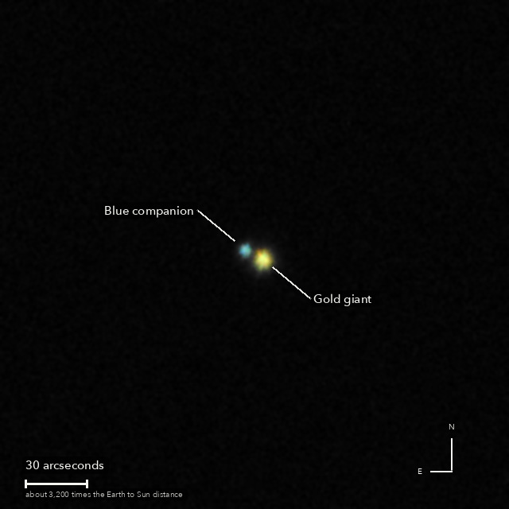

Almach
Gamma Andromedae, a gold and blue double star in Andromeda
To the eye it is one star in Andromeda. A telescope splits it in two: a gold giant and a small blue companion, a favourite for the contrast of their colours. The blue one is really three stars, too close together for this picture to separate. Everything here, both stars and the dark between them, would fit in half a light-year.
What you are looking at

Swipe sideways to see the rest. Tap the picture for full size.
- Distance
- Roughly 350 light-years (not well known)
- The two stars are
- At least 1,000 times as far apart as the Earth is from the Sun: six days for light to cross
- The light left
- Around 1676, the year the speed of light was first measured
- Honest note
- The colours are as the camera recorded them, with nothing added: the gold star is probably a little more orange than this, and the blue one a little bluer
Technical detailsHow this picture was made: the equipment, the exposures and the processing.
© 2026 Brad Gessler · Celestron 8SE (8 inch, f/10.3) and Sony a6000 on an EQ6-R · San Francisco Bay Area · night of 12 October 2026
© 2026 Brad Gessler. The pictures and the words are his own; all rights reserved.